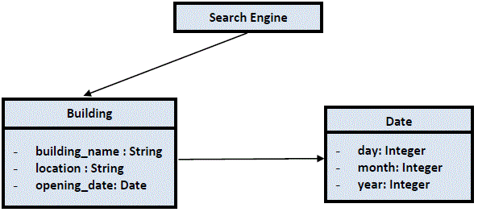

Buildings
Problem Description
In this problem, you will build a simple search engine for buildings. You need to create 3 classes:

The engine will support the following operations:
- add <building name> <location> <opening date>
- This operation will add a new building to the database.
- There will be no space in the building names.
- The opening date will have the format <day> <month> <year>, e.g. “16 February 2012”. You will create a new Date object to store the opening date.
- If a building with the same name has not been added, print “Added”.
- Otherwise, print “Duplicated” and do not add the building to the database.
- search <keyword>
- This operation will look for buildings whose name contains the specified keyword and it will be case insensitive. The keyword will be exactly one word.
- Output the names of the buildings, separated by a comma and a single space. (same order as input, case sensitive). You can assume that there is always at least one match.
- oldest and newest
- Output the name of oldest and newest buildings, and their locations. It is guaranteed that the oldest and the newest building will be unique.
Input
The first line contains an integer Q (1 <= Q <= 100), the number of queries. The next Q lines are the operations.
Output
There are Q lines in the output. You must output the answer for every query according to the rules specified above.
Sample Input
8
add Eiffel France 31 March 1889
add PetronasTowers Malaysia 1 January 1998
oldest
add PisaTower Italy 9 August 1173
oldest
add PisaTower Italy 9 August 1173
search Tower
newest
Sample Output
Added
Added
Eiffel in France
Added
PisaTower in Italy
Duplicated
PetronasTowers, PisaTower
PetronasTowers in Malaysia
Note
- You are required to submit the following files:
SearchEngine.h Date.h
SearchEngine.cpp Date.cpp
Building.h
Building.cpp
Please use OOP design in your solution. Put your main function inside the source file SearchEngine.cpp.
Months in Gregorian calendar are: January, February, March, April, May, June, July, August, September, October, November, December.